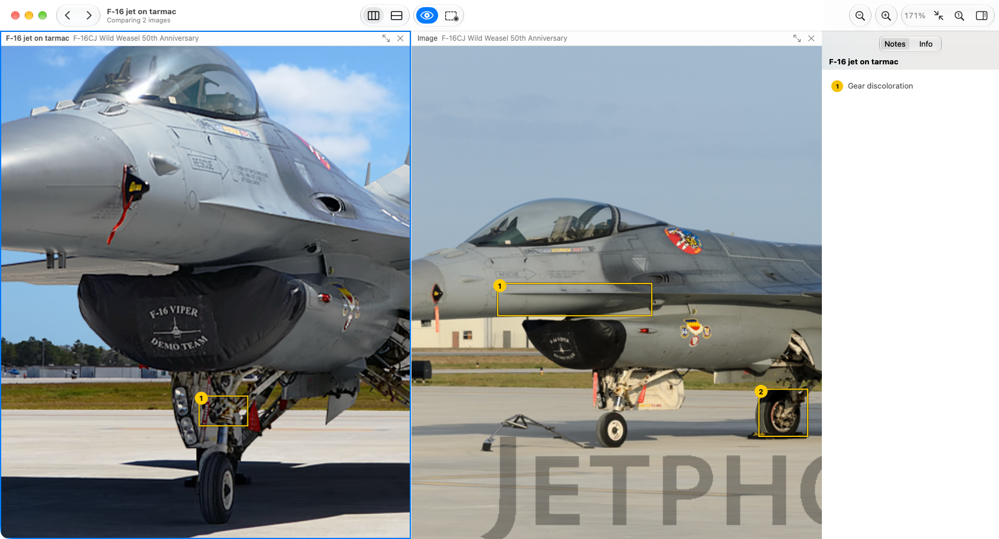

For scale modellers · Made for the Mac
All your build research, in one notebook.
BenchBook gathers the photos, instructions, videos and notes for every build. Mark up reference shots, compare them side by side, and know exactly which paints you still need to buy.
Free · Requires macOS 15 or later · Signed and notarised by Apple

A notebook per build
References, paints and aftermarket parts for each project, with its status at a glance.
Capture from anywhere
Drag, paste or share photos, PDFs, web pages, videos and text straight into a project.
Notes on the photo
Draw a box around a detail and write what it is. The original image is never changed.
Compare side by side
Open up to four images in one window, each zooming on its own.
Paints, planned
Your whole paint rack, each build's paint list, and a shopping list of what you're missing.
Yours, on your Mac
No account and no cloud. Your library stays on your Mac, with one-file backups.
Every build gets its own notebook.
Each project keeps its research, its paint list and its aftermarket parts together, so everything for the F-16 is in one place and nothing for the Spitfire gets in the way.
- Track each build as Researching, In Progress, Paused or Completed, and filter the sidebar by status.
- Keep decals, resin, photo-etch and other aftermarket parts with their status: considering, ordered, in the stash, used.
- Move or copy references to another project by dragging them onto it in the sidebar.

Save it the moment you find it.
Drag a photo from Safari, paste a link, or choose BenchBook in the Share menu. It lands in the right project with your tags and a note, and the original file is kept exactly as it was.
- Images, PDFs, Markdown, web pages, YouTube and Vimeo videos, highlighted text and your own notes.
- Web pages get their preview image and description; videos get their poster, channel and length.
- A YouTube timestamp becomes a moment you can jump straight back to.
- Select a whole set by dragging a rectangle across the gallery, just like in Finder.

Write on the photo, not on a sticky note.
Zoom right in on a reference shot, draw a box around the detail that matters, and say what it is. Every box is numbered and listed beside the image, and searchable later.
- Zoom and pan with a trackpad, mouse wheel or keyboard; ⌘D draws a box.
- Your notes sit on top. The original photo is never edited.
- On Macs with Apple Intelligence, BenchBook can suggest a title and note for an image, on the Mac itself.

Two angles are better than one. Four are better still.
Select up to four images and open them side by side or in a grid. Each zooms on its own, and the notes panel follows whichever image you click.
- Drag in images from any project to add or swap one, across builds too.
- Double-click an image to fill the window, then double-click to go back.
- Step through the rest of a project in one pane while the others stay put.

Know what's on the rack and what's on the list.
Keep one catalogue of every paint you own or want, with brand, code, FS and RLM numbers. Add paints to a build with what they're for, and BenchBook works out what you still need to buy.
- A shopping list across all your builds, grouped by brand, that exports as a checklist.
- Filter by brand, range and what you own.
- Import and export the catalogue as CSV, to share it with friends.

Find that photo you saved six months ago.
One search covers every project: titles, notes, tags, file names, links, video descriptions, paints, parts, and the notes you drew on images. "f16" finds "F-16".
- A match in a box note opens the image zoomed straight to that box.
- A match in a video moment opens the video at that time.
- Narrow results to a tag as you type.

Your research stays yours.
BenchBook has no account, no subscription and no cloud service. Your library lives on your Mac, in a form you can always get back out.
Stored on your Mac
Every file you save is copied byte for byte into BenchBook's library. Nothing is uploaded anywhere.
Online only when you ask
The only time BenchBook goes online on its own is to fetch previews for links you save, and you can turn that off.
On-device intelligence
Apple Intelligence suggestions run entirely on your Mac. Your images are never sent away to be described.
One-file backups
Back up the whole library to a single file and restore it on any Mac. Every file is checked before anything is replaced.
Made for the Mac, not ported to it.
BenchBook is a native app that works the way your Mac does.
Start your next build with BenchBook.
Free for macOS 15 or later.